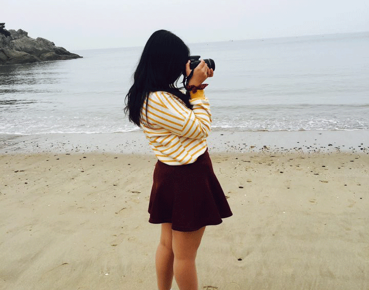

안녕하세요. 저는 웹 퍼블리셔가 되고 싶은 김아영입니다. UI/UX개념을 알았을 때 시각디자인뿐만 아니라 사람들이 어떻게 해야 편리하게 사용하는지 사용자 중심적으로 생각해 디자인해 나아가는 것이 흥미로웠습니다.
내가 만든 것으로 누군가가 편리하게 사용하고 도움을 줄 수 있다는 생각에 배우는 것이 재미있고 웹 퍼블리셔가 되어야겠다고 생각했습니다. 코딩을 배울 때 기능을 이해하기 어려웠던 것들이 이해가 되었을 때 그 기분을 잊을 수 없습니다. 계속해서 생겨나는 기능들을 배우고 활용할 수 있는 일을 하고 싶습니다.

Young Portfolio
about me
안녕하세요. 저는 웹퍼블리셔가 되고 싶은 김아영입니다. 상상하는 것을 구현해내고 배울 것이 계속 생겨나는 것이 코딩의 매력이라고 생각합니다. 아직 미흡하지만 성장하는 웹퍼블리셔가 되겠습니다.
초등학교 6년 내내 방과후 시간이나 등교 시간보다 1시간 빠르게 학교에 가 컴퓨터 수업을 들었습니다. 방과 후에 놀러가는 친구들이 부럽기도 했지만, 컴퓨터 수업시간 전에 하는 타자연습도 수업도 재미있었습니다.
6년 내내 컴퓨터 수업을 들으며 자격증도 따고 얻은 것이 많았지만, 중학교에 올라가게 되면서 컴퓨터와는 거리가 멀어졌습니다. 고등학교 때 카메라에 관심이 생겨 대학을 방송영화영상학과로 갔지만, 대학 생활을 하면서 촬영하는 것보다 컴퓨터 앞에 온종일 앉아 편집해도 편집하는 것이 좋았습니다. 교수님과 상담을 해 휴학을 하였고 취업 성공패키지를 알게 되면서 웹 퍼블리셔에 흥미를 느꼈습니다.
저는 꼼꼼한 사람입니다. 꼼꼼하다는 장점이 있지만, 느리다는 단점도 있습니다. 하지만 그 단점을 채우고자 남들보다 빨리 학원에 와서 숙제하고 수업이 끝나면 남을 수 있을 때까지 남아 공부를 합니다.
과제를 할 때 내 마음에 들지 않으면 다음 단계로 넘어가지 못했습니다. 하지만 답을 찾겠다고 매번 혼자 붙들고 있을 수는 없다는 것을 알게 되었습니다. 다른 사람에게 도움을 요청하거나 결과물을 완성하여 피드백을 받아 고쳐나가는 것이 빠른 길이라고 느꼈습니다. 이번 일을 계기로 내가 혼자 답을 찾는 것과 다른 사람에게 질문하고 피드백을 받으며 결과물을 만들어나가는 일을 구별할 수 있게 되었습니다.
저는 분위기를 이끌어 가는 사람보다는 분위기에 맞춰가는 사람입니다. 상대방의 이야기에 귀 기울이고 상대방의 분위기에 맞춰가기도 하지만 내 의견을 알려야 할 때, 틀린 것을 바로잡을 때는 뚜렷하게 내 의견을 전달합니다.
다툼이 일어나면 중재하고, 의견 차이가 있을 때는 상대방을 이해하려 노력하고 나의 의견을 설명해주고 설득하기도 합니다. 촬영 아이디어 회의를 할 때 여러 의견을 하나로 잘 조합하고 조율한 결과를 작품에 적용하여 영상을 제작하였습니다. 사람들에게는 장단점이 있습니다. 그 사람이 지닌 단점을 보기보다는 장점을 보려 하고 배울 점이 있다면 상대방을 인정하고 닮아가려 노력합니다.